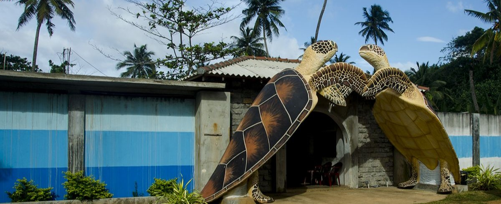

An Introduction to the Kosgoda Turtle Hatchery
The Kosgoda Turtle Hatchery, located in the coastal village of Kosgoda in Sri Lanka, is a renowned conservation facility dedicated to protecting and preserving sea turtles. Operated by the Sri Lanka Wildlife Protection Society (SLWPS), the hatchery plays a vital role in safeguarding different species of sea turtles that nest along the Sri Lankan coast. It actively monitors and protects nesting sites from potential threats and human disturbances, ensuring a safe environment for turtle eggs to hatch. The hatchery also facilitates the incubation of turtle eggs, providing optimal conditions for successful hatching. Once the hatchlings emerge, the hatchery organizes regular release programs, allowing visitors and volunteers to witness the magical moment of the young turtles making their way to the ocean, increasing their chances of survival.
Apart from its conservation efforts, the Kosgoda Turtle Hatchery serves as an educational center, offering valuable information about sea turtles and their significance in the ecosystem. It conducts awareness programs to educate visitors and local communities about the importance of sea turtle conservation, as well as the threats these creatures face. Through its rehabilitation facilities, the hatchery provides care and medical assistance to injured or sick turtles, nursing them back to health before releasing them back into the wild. With its dedication to conservation, education, and rehabilitation, the Kosgoda Turtle Hatchery continues to make a significant impact in protecting Sri Lanka's sea turtle populations and promoting their long-term survival.
Conservation Efforts of Kosgoda Turtle Hatchery
The Kosgoda Turtle Hatchery is at the forefront of sea turtle conservation in Sri Lanka. The primary objective of the Kosgoda Turtle Hatchery is to conserve and protect sea turtle species that nest along the Sri Lankan coast. The hatchery actively works to protect and preserve sea turtle populations by monitoring nesting sites and safeguarding turtle eggs from threats such as poaching and predation. It plays a crucial role in ensuring the survival of various turtle species, such as the Green Turtle (Chelonia mydas), Hawksbill Turtle (Eretmochelys imbricata), Loggerhead Turtle (Caretta caretta), Olive Ridley Turtle (Lepidochelys olivacea), and Leatherback Turtle (Dermochelys coriacea). Through their dedicated efforts, the hatchery helps maintain the delicate balance of marine ecosystems and contributes to the overall biodiversity of Sri Lanka's coastal areas.
The Kosgoda Turtle Hatchery organizes regular release programs, providing visitors with a unique opportunity to witness the release of newly hatched turtles into the ocean. These events serve as powerful educational experiences, raising awareness about sea turtle conservation among both local communities and tourists. Through guided tours and interactive sessions, the hatchery educates visitors about the life cycles, behavior, and threats faced by sea turtles. It highlights the importance of preserving turtle habitats, reducing pollution, and practicing responsible tourism. By fostering a deeper understanding of these magnificent creatures and their ecological significance, the hatchery aims to inspire individuals to become advocates for sea turtle conservation.
Key Features of Kosgoda Turtle Hatchery
- Nesting Site Monitoring and Protection: The hatchery monitors nesting sites along the Kosgoda beach and neighboring areas to protect the turtle nests from disturbances, poaching, and other threats. They mark and relocate vulnerable nests to the hatchery for better protection.
- Egg Incubation: The Kosgoda Turtle Hatchery has dedicated facilities for incubating turtle eggs. The eggs are carefully collected from the nesting sites or donated by local communities and then placed in specially designed hatcheries. These hatcheries provide suitable conditions, including regulated temperature and humidity, to ensure successful incubation.
- Release of Hatchlings: Once the eggs hatch and the baby turtles emerge, the hatchery organizes regular release programs. Visitors and volunteers have the opportunity to witness or participate in the release of the hatchlings into the sea. The hatchery aims to create a safe environment for the young turtles and increase their chances of survival.
- Education and Awareness Programs: The Kosgoda Turtle Hatchery also serves as an educational center, offering information about sea turtles, their life cycles, and the threats they face. Visitors can learn about the importance of turtle conservation and the need to protect their natural habitats. The hatchery conducts awareness programs to promote responsible tourism and eco-friendly practices.
- Research and Rehabilitation: The Kosgoda Turtle Hatchery actively engages in research activities related to sea turtle conservation. It collects valuable data on nesting patterns, hatching success rates, and turtle behavior, contributing to scientific knowledge about these magnificent creatures. The hatchery also operates a rehabilitation center, providing care and medical assistance to injured or sick turtles. Skilled staff and veterinary facilities ensure that the turtles receive appropriate treatment and rehabilitation. Once the turtles recover, they are released back into the ocean, allowing them to return to their natural habitat. This research and rehabilitation work not only aids individual turtles in need but also helps inform conservation strategies and contributes to the long-term survival of sea turtle populations in Sri Lanka.
Overall, the Kosgoda Turtle Hatchery stands as a significant conservation institution, promoting education, research, and rehabilitation efforts to protect and conserve sea turtles in Sri Lanka. The Kosgoda Turtle Hatchery is a popular tourist destination, attracting both local and international visitors who are interested in learning about sea turtles and supporting their conservation. It plays a significant role in raising awareness, conducting research, and protecting sea turtle populations in Sri Lanka.